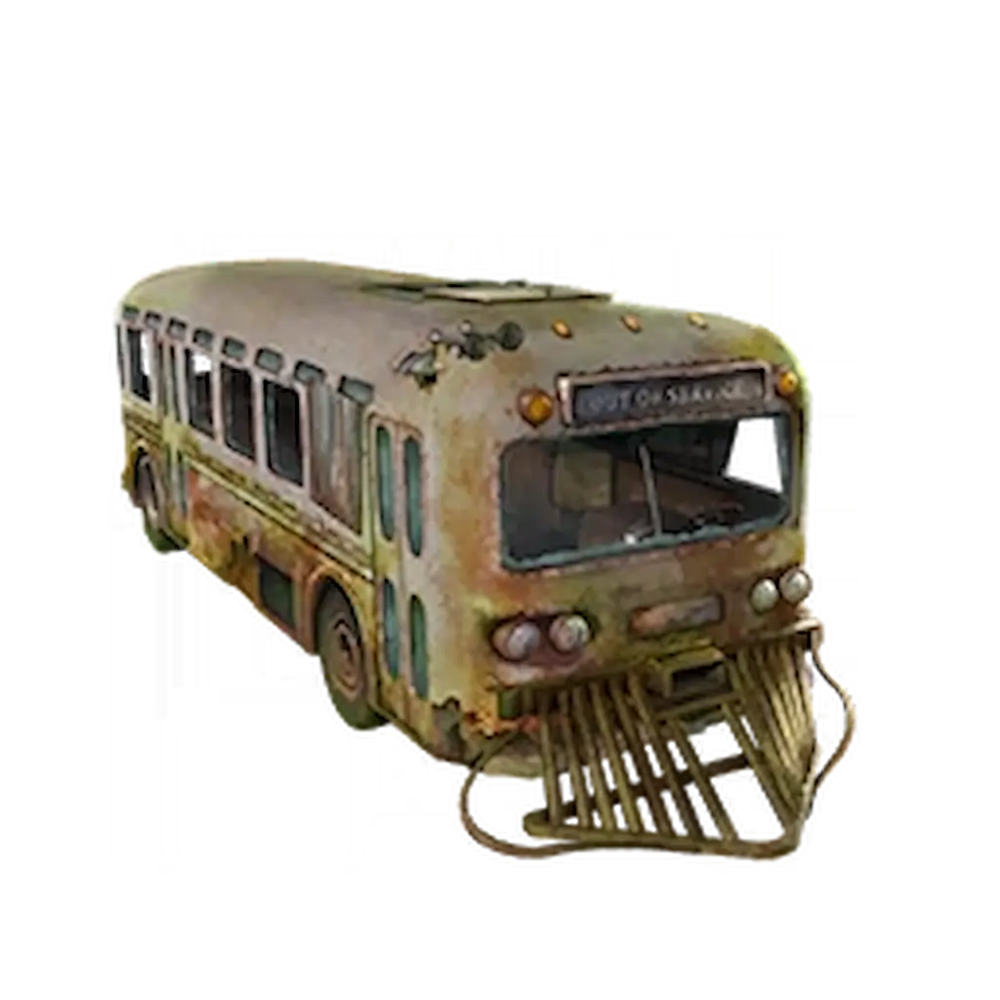

Musisz mieć ukończone główne zadanie w Ashes Of The Damned. Mecz musisz rozpocząć na poziomie Tier 2. Wyzwanie dostępne jest od rundy 60+.

Musicie dotrzeć do Rundy 60 i przetrwać całą rundę, nie otrzymując absolutnie żadnych obrażeń.
PRO TIP: Możecie wjeżdżać do garażu, aby zyskać chwilę na naprawę/leczenie pojazdu. Jeśli przetrwacie rundę bez trafienia, usłyszycie złowieszczy śmiech Mr Peaks.
Zostaniecie przeniesieni do wyzwania, które wywróci Waszą walkę do góry nogami. Twoja broń nie zadaje bezpośrednich obrażeń zombie!
Co on robi po aktywacji?